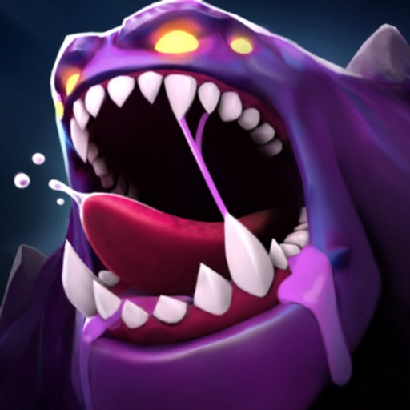

Internal QA testing tool
Elinext built a tool that helped game teams watch behavior, cut manual effort, and reduce test error.
Read case studyField Day is live in early access, and the next phase is about trust. Players need clean starts, fair matches, stable builds, and clear store flows.
We saw BIT ODD is hiring a QA Lead for Field Day. That points to a real moment: live quality now needs its own system, not only sharp game craft.

Field Day Fast PvPvE action on iOS and Android.Hiring a QA Lead says Field Day is moving from soft launch learning into repeatable live delivery. The hard part is not just finding bugs. It is keeping builds stable across devices, stores, regions, and fast updates. If that load sits on one hire, player issues can outrun the team. A small outside QA squad can give BIT ODD room to keep tuning the game.
Engagement model: a dedicated QA squad under your product or game lead for a six-week pilot.
Turn Field Day reviews, crashes, and QA backlog into one ranked release risk map.
Build smoke checks for launch, login, matchmaking, match start, extraction, rewards, and purchases.
Run iOS and Android device passes across soft-launch countries and weak network states.
Set clear go or no-go checks for store compliance, regressions, and live issue response.
Elinext is a full-cycle software development company, active since 1997, with about 700 in-house specialists and no freelancers. For BIT ODD, the fit is a focused mobile QA team, backed by mobile, backend, DevOps, and QA engineers. Elinext holds ISO 9001 and ISO 27001 certifications. Our teams have served Siemens, Broadcom, Volkswagen, TRUMPF, and TUI. That gives your team extra delivery depth without changing how Field Day is led.
Elinext built a tool that helped game teams watch behavior, cut manual effort, and reduce test error.
Read case study
Elinext test analysts ran a large mobile test suite and found blocking and critical defects.
Read case study